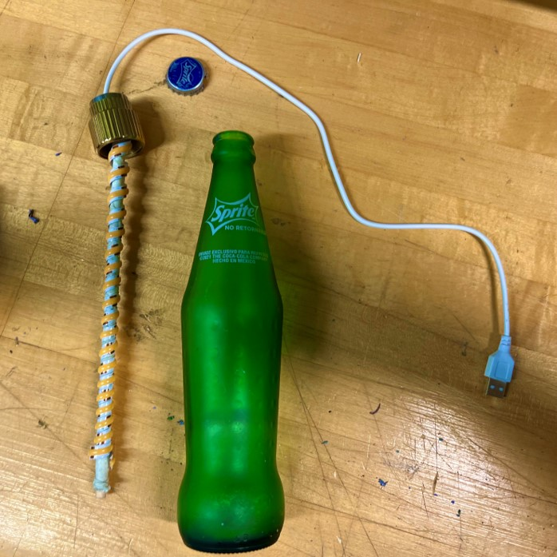
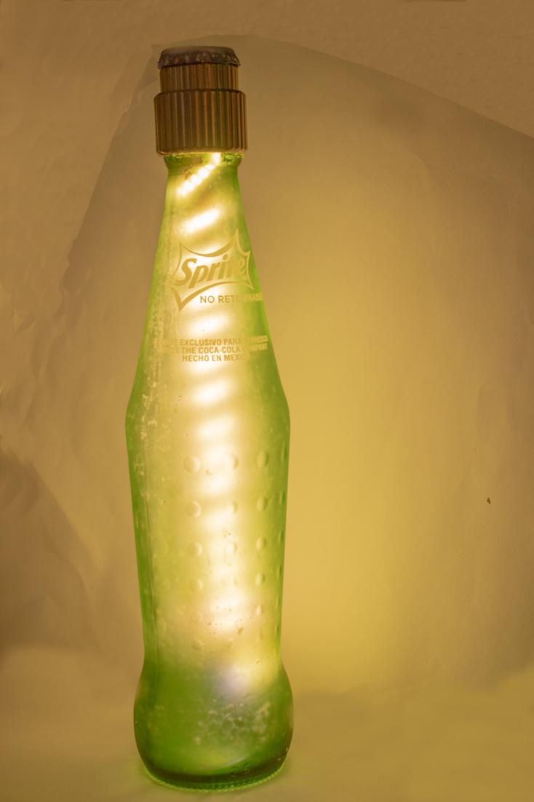
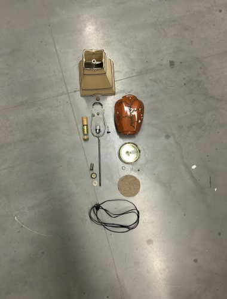
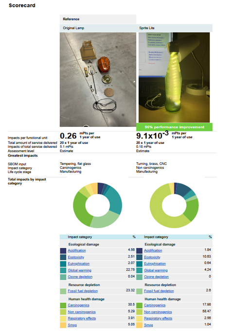
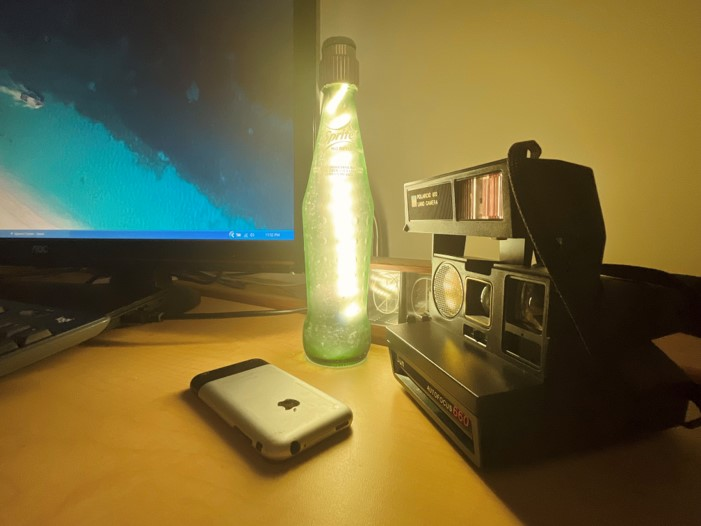
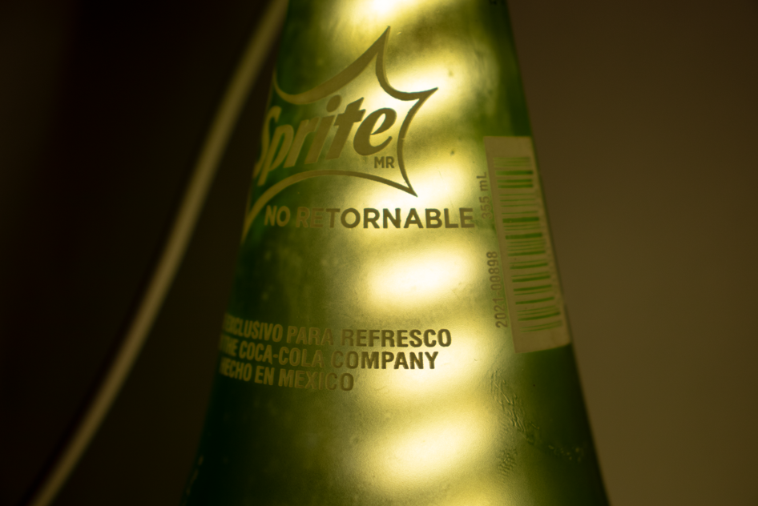
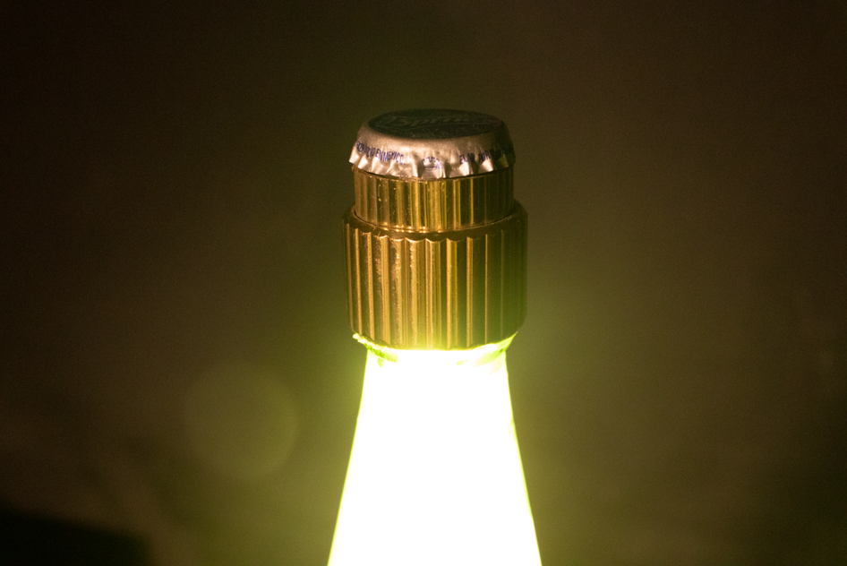
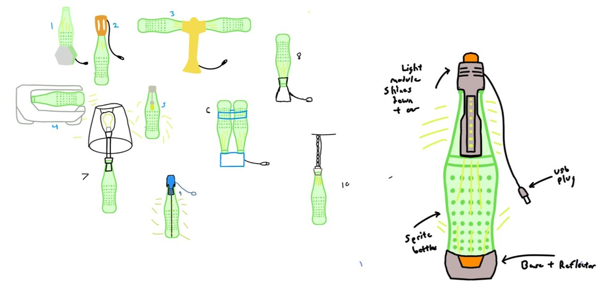

SpriteLite
Beginning
Our Problem:
During this project we were tasked with developing a lamp that incorporated at least one recycled material.
Limitations:
The final product must have a lower overall environmental impact when calculated via the Sustainable Minds platform. The lamp must also incorporate recycled materials for sustainability.
Purpose:
The overall goal of this project was to create an aesthetically pleasing, affordable lamp with sustainability in mind.
Middle
Decisions:
The key decisions for this project were the overall design, sustainability goals and targets, and what recycled materials to incorporate.
Process:
For this project I first started by producing some initial concept sketches. Next, I wrapped LED tape around a brass rod and placed it within a recycled bottle. I then machined a topper from part of an old lamp. Lastly, I conducted a sustainability analysis via the Sustainable Minds platform to confirm my design’s validity.
Materials:
Recycled bottles, LED strips, recovered brass, bottle cap, USB wiring, frosted glass spray.
End
How did this solve the problem?
A lamp was produced from a recycled Sprite bottle.
How did this achieve its purpose?
It was not only brighter but also much more carbon neutral than the original design when evaluated through the Sustainable Minds platform.
Conclusion:
My project demonstrates my ability to incorporate unique materials into a prototype or product by proving I can design with sustainable material choices in mind.